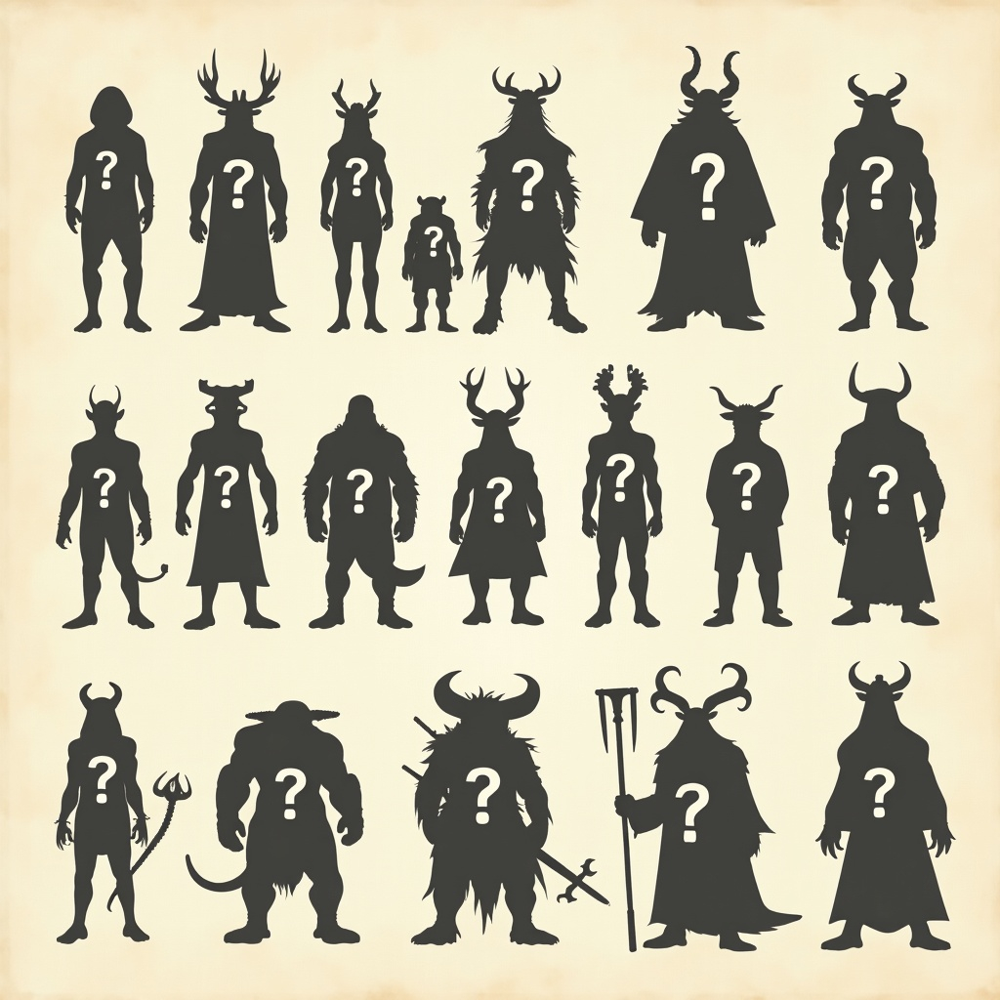
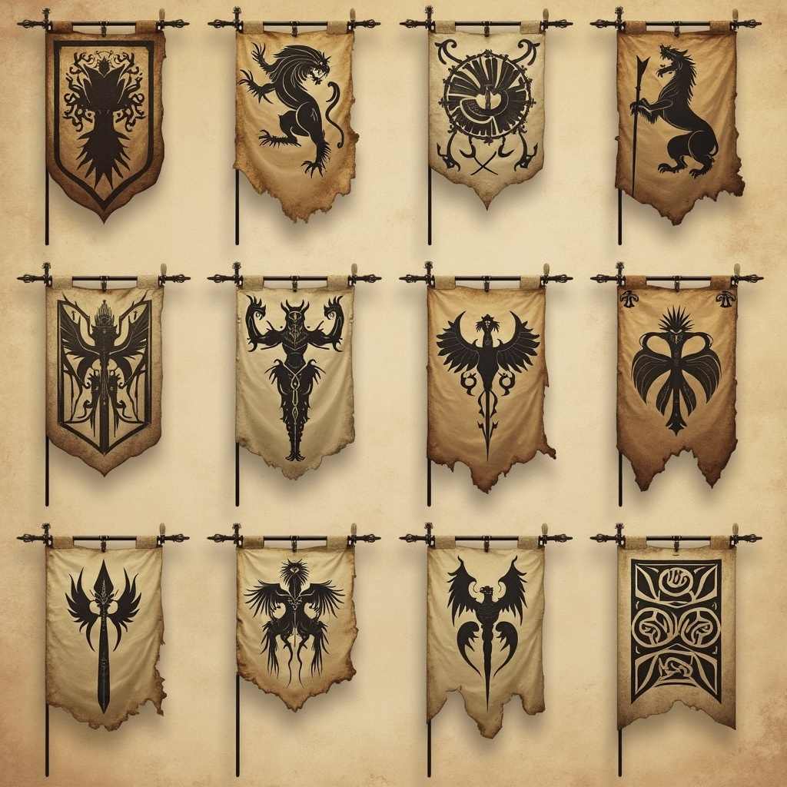
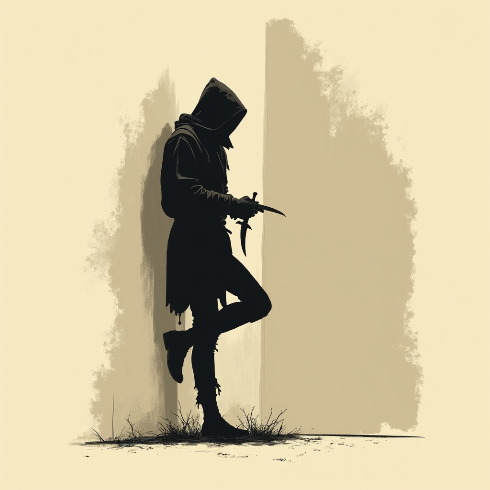

Choose your allies wisely...
In the twilight hours when shadows grow long and the veil between worlds grows thin, you might glimpse them — the
other children of Skazka, walking paths both familiar and strange. They are your neighbours in this vast,
myth-haunted realm, sharing the same cursed ground beneath their feet and the same twin moons overhead, yet each
carrying their own ancient burdens and forgotten histories.
Skazka is home to at least a dozen intelligent races, each as complex and contradictory as the world itself. Some
trace their lineages back to the first stirrings of magic in Kelos's primordial forests, their roots deep in soil
that remembers when gods walked openly among mortals. Others are wanderers from beyond the veil — refugees,
conquerors, or pilgrims drawn by whispers of power that echo across the dimensional barriers. Whether born of this
world or adopted by it, all have been shaped by Skazka's embrace.

Listen carefully...
In the bustling markets and dimly lit taverns, you'll hear the musical cadence of Trade Speak — the common tongue
born from centuries of necessity, diplomacy, and coin. This linguistic bridge emerged as caravans crossed hostile
territories and ambassadors negotiated in the shadows of crumbling empires. Yet beneath the shared words lie the
older tongues, each race's mother language carrying within it the weight of their deepest secrets, their most sacred
rituals, and their most terrible curses.
But do not mistake familiarity for safety. These are not merely exotic neighbours to wave at over garden fences.
Each race carries within them the capacity for both wonder and horror, for acts of breathtaking beauty and
unspeakable cruelty. They are products of a world where every blessing comes with a price, where magic flows like
poison through willing veins, and where the line between hero and monster shifts with each telling of the tale.

Watch your back...
To know your neighbours in Skazka is to understand that diversity here is not a comfort — it is a weapon, a source of
strength, and a promise of danger. For in a world where even the stories themselves can kill, the greatest threat
may not come from the monsters lurking in ancient ruins, but from the thinking, feeling, dreaming beings who share
your path through this labyrinth of myth and shadow.
Step carefully, listen closely, and remember: in Skazka, every neighbour is a potential ally, enemy, or
both — sometimes within the span of a single conversation.
×